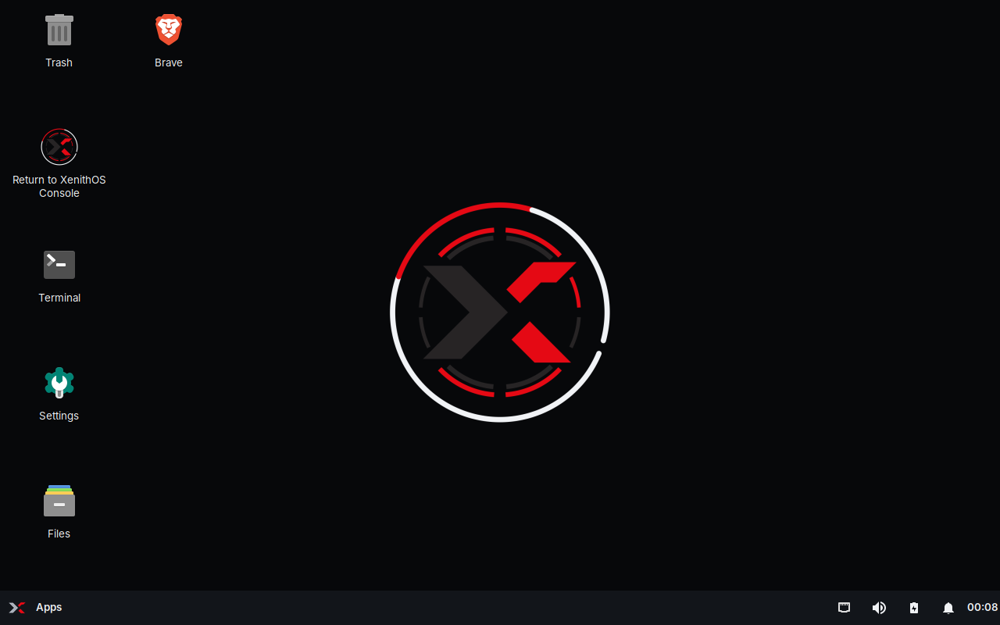

XenithOS is a homebrew console system. It runs on an Xbox 360 in place of the Microsoft dashboard, and on PCs and Raspberry Pis as a console you can switch to a normal Linux desktop. It has its own home screen, profiles with avatars, a store, YouTube, DOOM and a light-trail game.
Every copy uses XenithOS Cloud, the free service this page runs on: profiles, the Store, news, leaderboards and Tube (YouTube) live here, for everyone. It's written in C, on libxenon for the Xbox and SDL2 everywhere else.
What it looks like
These come from the XenithOS simulator, which runs the exact code that goes on the console and saves the frames as images.

Players
Everyone with a XenithOS profile. Your gamertag and avatar are saved to XenithOS Cloud, so they follow you to any Xbox, PC or Pi. You can link yours to an OCAccount, which works across Owen's other projects too.
Loading...
VOLT leaderboard
| # | Player | Score |
|---|
In the store
| Item | Size |
|---|
Where it's at
"Works" in the Xbox column only means I've seen it working on the real console. Everything else has run in the simulator or on Linux so far.
| Part | Builds | On the Xbox | Notes |
|---|---|---|---|
| Booting XenithOS from the exploit | yes | works | 0.3.1, 0.4.0 and 0.4.1 ran on the 360 S |
| Interface, Store updates | yes | works | 0.4.1 installed itself from the Store |
| Sound in games, app start times | yes | not yet | 0.5.1 keeps the picture up between programs and lines the sound chip up after a game |
| Profiles, Cloud, avatars | yes | not yet | needs the Ethernet cable on the Xbox; no Wi-Fi driver |
| VOLT, DOOM, Tube, Photos | yes | not yet | DOOM comes with Freedoom and has sound effects; no music yet |
| PCs and Raspberry Pis | yes | - | 0.5.2 runs apps inside XenithOS's window: no black screen between them |
| Minecraft and the guide | yes | - | PCs only; they open over XenithOS on its own X server and the guide comes up over them, tested in a virtual display |
| HostMC | yes | - | PCs only; it ran real Minecraft 26.3 and Paper servers in testing, but nobody has joined one from a real copy of Minecraft yet |
| XenithOS Desktop (the whole OS for PCs) | yes | - | installed on a real PC, and installs, starts and updates itself in VirtualBox with UEFI, Secure Boot and BIOS |
| XenithOS Cloud and this site | yes | live | you're on it |
Get XenithOS
There are three ways in. Pick the one that fits what you have.
1. On an Xbox 360
XenithOS runs in place of the Microsoft dashboard, from a USB stick. You need a 360 on dashboard 17559, a FAT32 USB stick, the console's hard drive (for avatar data), and an Ethernet cable for the online parts.
Download
Set it up
- Put ABadAvatar and
FreeMyXe on the stick, with FreeMyXe's xex renamed to
default.xex. - Copy everything in the download to the root of the stick. It already knows the XenithOS Cloud address.
- Unplug the network, boot the 360, and leave the ABadAvatar profile highlighted on the sign-in screen. It can take up to 20 minutes and a few tries.
- When FreeMyXe appears, choose Launch XeLL instead. XeLL loads
xenon.elfand XenithOS starts. - Plug in Ethernet, then make a profile from the Profile tile. Updates come from the Store after that.
2. On a PC or Raspberry Pi that already runs Linux
XenithOS Console added to the Linux you already have: Debian 12 or newer, Ubuntu 22.04 or newer, or Raspberry Pi OS (Lite is fine). Your system and files stay as they are.
Download and install
One command does both. Run it as your user: it downloads XenithOS, builds it and sets the machine to start straight into it.
curl -fsSL https://owencosta.diy/xenithos/install.sh | sudo bashSet it up
- Restart. You're in console mode: XenithOS full screen, with a controller or the keyboard (arrows, Enter, Escape).
- Desktop mode is in XenithOS's power menu: the full Linux desktop, for a browser and everything else.
- Return to XenithOS in the desktop's menu goes back to console mode.
- Updates come from the Store: pick XenithOS update, and it builds the new version on your machine and restarts into it.
- The Store's Apps section (LB and RB switch sections) has XenithOS's own apps, VOLT, DOOM, HostMC, Tube and Photos, and Minecraft from Flathub. DOOM comes with both Freedoom games. Installing an app puts it on the home screen, and X in the Store removes it again. Minecraft installs from Flathub through XenithOS, starts from its home screen and gets the whole screen.
- The guide: press the Xbox button, or hold Esc, in a game. Return home leaves the game running (choose it again to go back), Switch game starts another, and the controller can work as a mouse for launchers or as a keyboard and mouse for Minecraft.
- HostMC hosts a Minecraft: Java Edition server from your XenithOS machine. Friends on your network join with its address, and its Internet page lets them join over the internet without opening ports, through playit.gg or through a VPS of your own.
In the Store on PCs
Apps come from Flathub and run under their own licenses. Minecraft: Java Edition runs through Prism Launcher and needs a Minecraft account; XenithOS starts the instance you played last, and the controller plays it like Minecraft on a console. Machines installed before 0.5.4 need the install command once more for apps.
Add --no-desktop to skip desktop mode, or run it again with --uninstall to undo it. More in linux/README.md.
Want XenithOS as the PC's whole system instead? That's XenithOS Desktop, below.
3. XenithOS Desktop
XenithOS as a PC's whole operating system, in one ISO with everything in it, built on Ubuntu 24.04 LTS. The PC starts in a desktop with XenithOS's own look, and XenithOS Console is one click away. Brave, Mullvad VPN and a full set of security tools come with it, and it updates itself from Settings. For 64-bit PCs with 4 GB of memory and a 16 GB drive or more.
Download

Set it up
- Put the ISO on a USB stick of 4 GB or more with balenaEtcher (or Rufus, in DD image mode).
- Start the PC from the stick (its boot menu key is usually F12, F11 or Esc) and choose Install XenithOS Desktop. Start XenithOS Desktop tries it first without changing anything.
- Make your account, then pick the drive. When it's done, choose Restart and wait: the PC restarts by itself into XenithOS Desktop.
- Return to XenithOS Console on the desktop (or Super+Esc) opens XenithOS full screen. Its power menu, Switch to desktop mode, comes back.
- The Apps menu has the security tools in their own group, sorted by what they're for. The console apps you install are there too, under Games and Media, and open full screen. Settings > Console apps adds HostMC, DOOM and VOLT to XenithOS Console, and its Your own apps list puts the PC's other apps on the console's home screen.
- Updates are in Settings > Updates: one button for XenithOS Desktop, XenithOS Console, the apps and the system. No writing the stick again.
Want to keep the Linux you have? Use the install command above instead.
Build log
- Desktop 2.0.1
XenithOS Desktop can be downloaded here: XenithOS as a PC's whole system in one ISO, built on Ubuntu 24.04 LTS, with XenithOS Console one click away. The console apps you install show up in the desktop's Apps menu and open full screen, Settings puts the PC's own apps on the console's home screen, and Settings > Updates keeps all of it up to date.
- 0.6.8
HostMC can take your server onto the internet through a VPS of your own, as well as through playit.gg. It makes a key of its own and shows the line to add on the VPS, never asking for its password. It keeps a tunnel open while the server runs, with HostMC closed too, and brings it back if it drops. Each time the tunnel comes up, HostMC checks from outside that friends can get in, and if they can't, it says in plain words what the VPS still needs. Players show up as coming from the VPS, so bans by name work but bans by address don't.
- 0.6.7
A Feedback tile on the home screen: got a recommendation or a bug? Let us know there. Report a bug or suggest something, type it with the controller or a keyboard, and it goes to the people who make XenithOS, with XenithOS's version, what it runs on, and your gamertag if you're signed in. The other tiles' words still fit beside it. Holding Esc for the guide over an app no longer closes the guide again as you let go.
- 0.6.6
On a PC, the Store's Apps section has XenithOS's own apps: VOLT, DOOM, HostMC, Tube and Photos. They come with XenithOS, so installing one puts it on the home screen straight away, and X removes it again. Updates leave alone what you removed. DOOM is one package with both Freedoom games: installing it downloads them, and removing it takes them away. Notifications and messages fit their words: a long one wraps onto another line or ends in "..." instead of running off the screen. An app started on its own, from a desktop's menu, closes when you leave it instead of starting again.
- 0.6.5
HostMC starts on Ubuntu. It stopped as it opened, because Ubuntu builds programs with a safety check that caught a buffer smaller than that check wants. XenithOS itself made the same mistake where it reads Steam's libraries, so a PC with Ubuntu and Steam could have stopped there too. Both are fixed, and every PC program is now tested built the way Ubuntu builds it.
- 0.6.4
The logo is now a moment of the start-up: the X with its pieces standing a little apart, the broken red and grey ring around it, and outside that the white ring with a red quarter that the start-up's streaks close into. The start-up ends on it, without the slash and the ticks, and the small X next to the name, the Store's XenithOS update and this site match.
- 0.6.3
A new logo: a grey chevron and two red arms make an X with a red slash through it, inside a broken red and grey ring with four ticks. The start-up builds it. Four streaks spiral in and settle on the ring, the ring sweeps round from the ticks, the X comes together, and the slash cuts across with the chime. Next to the name, at small sizes, the X stands on its own. The Store's XenithOS update and this site have it too.
- 0.6.2
HostMC, a new app on PCs, hosts a Minecraft: Java Edition server. It gets the server from Mojang, or Paper from PaperMC, along with the Java it needs. It tells you what it's about to download first and checks every download. Its pages start and stop the server, show its console with a keyboard for commands, look after players (op, kick, ban and the whitelist), change the server's settings and memory, pick a version, and back up, restore or start a world. New servers use a whitelist, so add your friends in Players. The server keeps running when you leave HostMC, and HostMC finds it again when you come back. To play with friends over the internet, turn on playit.gg in the Internet page and approve it with the link or QR code. The on-screen keyboard has a row of symbols for commands.
- 0.6.1
Apps without a picture of their own, like the Prism Launcher tile, show their name on a card in a size that fits it, instead of running over its sides in the Apps list.
- 0.6.0
The guide closes the way it opens, with the Xbox button or Esc, and makes a sound as it slides in and out. Minecraft follows its own Xbox layout: A jumps, B sneaks, X and Y open crafting and the inventory, LB and RB pick from the hotbar, and the d-pad changes the camera, drops, swaps hands and opens chat. In its menus the left stick moves the pointer, A picks up and puts down, X takes one, Y moves a stack across and B closes. Minecraft has two tiles now: Minecraft goes straight into the game you played last, Prism Launcher opens the launcher. In console mode, games from Flathub no longer wait for desktop services that couldn't start because nobody told them about the screen.
- 0.5.9
Games on PCs get the keyboard and the controller properly. XenithOS's window manager now says it's there the standard way, so Minecraft goes full screen through it instead of around it, which had left Minecraft without the keyboard: the camera turned but you couldn't move. Games from Flathub can see the controller on older Flatpak versions too. The controller plays Minecraft with its console layout (A jumps, B drops, Y opens the inventory, LB and RB pick from the hotbar, the right stick pressed sneaks), and XenithOS draws less while a game loads. On the Apps screen, X removes an app from Flathub, with or without its data, including ones the Store doesn't list any more. The Store has Minecraft; Roblox is out for now.
- 0.5.8
The Apps screen lists everything down the screen, one to a line with its picture and version, instead of a grid three across: up and down go through them, and the list slides along as you go. A game left running from the guide says Running there too.
- 0.5.7
The guide: on a PC, press the Xbox button (or hold Esc) in a game and a side panel comes up over it. Return home leaves the game running behind the home screen, with Running on its card; choose it to go back. Switch game starts another, and the controller can work as a mouse for launchers or as a keyboard and mouse. Minecraft (Prism Launcher) starts straight into the instance you played last and plays like a keyboard and mouse once the game is up. At home, XenithOS reaches XenithOS Cloud over your own network instead of out through the internet and back, and the Store opens with one request instead of dozens: what took half a minute takes a moment. The Store has Roblox and Minecraft, the CONSOLE label next to the logo is gone, and the home row starts with what you played last.
- 0.5.6
A new look for XenithOS, after the Systembridge streaming site: near-black, cards with quiet edges that lift with a white outline when they're selected, white buttons and one red. XenithOS has a logo of its own, an X made of two chevrons that don't quite meet with a red point between them, and a start-up to go with it: four streaks of light spiral in and become the logo, the red point lands with the chime and a ring rolls out, then the name comes in beside it. VOLT's trail, Tube, Photos and the Store's thumbnails take the new colours too.
- 0.5.5
A start-up animation: the XenithOS wordmark builds itself up square by square. The Jump back in row on the home screen scrolls to keep the selected app in view. On PCs, console mode now runs XenithOS on its own X server, so apps from Flathub and Steam open full screen over XenithOS instead of the screen going black, installers and dialogs are centred, and XenithOS's "Starting" screen stays up until the app is ready. Apps no longer inherit XenithOS's own display setting, which made Sober (Roblox) stop with "no video subsystem" on newer systems. Machines without an X server keep the 0.5.4 way.
- 0.5.4
The Store on PCs has apps from Flathub: Roblox (through Sober, a community project not made by Roblox), Minecraft through Prism Launcher, Kodi, Firefox, Spotify, Discord, Moonlight, emulators and games. They install behind XenithOS's own screens, start from the home screen and get the whole screen to themselves; hold Guide for three seconds to come back. Steam is there too, opening in Big Picture, with a section of games on Steam, and every game installed in Steam shows up on XenithOS's home screen with its picture. When a Steam game ends, XenithOS closes Steam and comes back. New everywhere: Photos, for your pictures, with zoom, turning and slideshows. On a PC, run the install command once more to add what apps need.
- 0.5.3
PCs and Raspberry Pis update from the Store, like the Xbox: XenithOS update downloads the new version's source, builds it on the machine, puts it in place and restarts into it. If the build fails, the current version stays. Machines installed before 0.5.3 need the install command once more first.
- 0.5.2
On PCs and Raspberry Pis, apps now run inside XenithOS's own window, so starting or leaving one never blanks the screen, the "Starting" screen stays up until the app is ready, and XenithOS's sound still works after you leave an app. Holding Guide for two seconds, or Ctrl+Alt+Backspace, closes an app that stops responding. Everywhere, a button still held when you switch (the A that starts an app, or BACK held to leave DOOM) no longer counts as a press in the next program, and quick key taps on a PC are no longer missed.
- 0.5.1
Switching between XenithOS and apps keeps the picture on the TV instead of going black: each program hands the next one what it needs, and the next one keeps the video mode that's already running. XenithOS shows a progress bar while it reads an app, and leaving an app goes straight back to the home screen with that app selected. The sound chip is lined up with where the last program left it, the likely cause of broken sound after a game. DOOM installs together with Freedoom: Phase 1 and 2, and asks which one to play.
- Tube 1.1
Videos start without the console timing out, and Tube says why when one won't play. When YouTube turns XenithOS Cloud away, it asks again the full way, solving YouTube's JavaScript challenge and using a proof-of-origin token. Skipping ahead reuses the video's links instead of asking YouTube again.
- 0.5.0
XenithOS runs on PCs and Raspberry Pis, with console mode and desktop mode. Tube plays YouTube, even on the Xbox. A new avatar editor with thirteen parts in three tabs. DOOM has sound effects. Apps start faster with a loading screen instead of a black one, and the sound chip is stopped before an app loads so it can't play noise. XenithOS Cloud is now a public service with news for everyone.
- 0.4.1
Fixes for what showed up on the real console. Sound is mixed on its own processor thread, so it no longer breaks up when the screen or network is busy. Only the parts of the screen that changed get sent to the TV, and thumbnails, icons and avatars are drawn once and reused, which makes the interface much faster.
- 0.4.0
Blue redesign with smooth animation, the Inter typeface, and thumbnails everywhere. Sounds made in code, including the start-up chime. Profiles with passcodes and avatars, saved on the server. On-screen keyboard, settings, and a simulator for testing on a PC.
- 0.3.2
Renamed to XenithOS. Version 0.3.1 was the first to boot on the real Xbox.
- 0.3
Networking over lwIP, the Store, the Cloud screen, VOLT leaderboards, and DOOM.
- 0.1 to 0.2
First builds: boot screen, home menu, app launcher, temperatures, controller test, and VOLT.